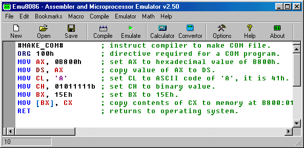
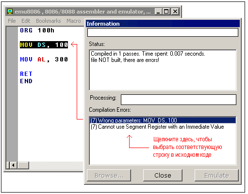

Компиляция кода Ассемблера
Перевод: Поляков А.В. http://www.avprog.narod.ru

Напечатайте ваш код внутри текстовой области и щелкните кнопку [Compile].
Вас спросят, где сохранить откомпилированный файл. После завершения компиляции вы можете
щелкнуть кнопку [Emulate] для загрузки откомпилированного файла
в эмулятор.
Директивы, определяющие тип исполнимого файла:
#MAKE_COM#
#MAKE_BIN#
#MAKE_BOOT#
#MAKE_EXE#
Вы можете вставить эти директивы в исходный код для определения
нужного вам типа исполнимого файла. В том случае, если компилятор не найдет ни одной
из этих директив, он спросит у вас тип файла перед его созданием.
Описание типов исполнимых файлов:
-
#MAKE_COM# - самый старый и самый простой формат исполнимого
файла. Такие файлы загружаются с префиксом 100h (256 байтов).
Выберите СОМ Template из меню New, если вы планируете
компилировать COM-файл. Директива компилятора ORG 100h
должна быть добавлена перед кодом. Выполнение всегда начинается
с первого байта файла. Поддерживается командной строкой DOS и Windows.
-
#MAKE_EXE# - более "продвинутый" формат исполнимого файла.
Не ограничены размер и количество сегментов. Сегмент стека
должен быть определен в программе. Вы можете выбрать EXE Template
из меню New для создания простой ЕХЕ-программы с определенными
сегментмами Данных, Стека и Кода. Точка входа (где начинается выполнение)
определяется программистом. Поддерживается командной строкой DOS и Windows.
-
#MAKE_BIN# - простой исполнимый файл. Вы можете определить
значения всех регистров, сегмент и смещение для области памяти,
куда этот файл будет загружен. Если загрузить файл "MY.BIN"
в эмулятор, он будет виден для файла "MY.BINF" и
загрузится файл "MY.BIN" в местоположение, определенное
в файле "MY.BINF". Регистры также установятся с учетом
информации из этого файла (откройте этот файл в редакторе для
изменения или изучения). В том случае, если эмулятор не найдет
файл "MY.BINF", будет использоваться текущие значения
регистров и файл "MY.BIN" загрузится в текущий CS:IP.
Выполнение начинается со значения в CS:IP.
Этот тип файла уникален для Emu8086.
Файл ".BINF создается автоматически компилятором, если он находит
директиву #MAKE_BIN#.
ПРЕДУПРЕЖДЕНИЕ! если файл ".binf" существует, то он будет перезаписан!
#LOAD_SEGMENT=1234#
#LOAD_OFFSET=0000#
#AL=12#
#AH=34#
#BH=00#
#BL=00#
#CH=00#
#CL=00#
#DH=00#
#DL=00#
#DS=0000#
#ES=0000#
#SI=0000#
#DI=0000#
#BP=0000#
#CS=1234#
#IP=0000#
#SS=0000#
#SP=0000#
|
Значения должны быть шестнадцатиричными!
Если эти значения не определены, то они устанавливаются по умолчанию:
LOAD_SEGMENT = 0100
LOAD_OFFSET = 0000
CS = ES = SS = DS = 0100
IP = 0000
Если LOAD_SEGMENT и LOAD_OFFSET не определены, то
используются значения CS и IP, и наоборот.
Если значение Load to offset не равно нулю (0000), то ORG ????h должна
быть добавлена в файл .BIN, где ????h - это смещение для загрузки.
Это должно быть сделано для того, чтобы компилятор мог вычислить
правильные адреса.
-
#MAKE_BOOT# - эта директива копирует первую дорожку дискеты (загрузочный сектор).
Вы можете записать загрузочный сектор виртуального дисковода
(FLOPPY_0) через меню эмулятора:
[Virtual Drive] -> [Write 512 bytes at 7C00 to Boot Sector]
Сначала вы должны откомпилировать ".boot"-файл, а затем
загрузить его в эмулятор (см. "micro-os_loader.asm" и "micro-os_kernel.asm"
в разделе "Samples").
Затем выберите в меню [Virtual Drive] -> [Boot from Floppy], чтобы загрузить
эмулятор с виртуального дисковода.
Затем, если вам любопытно, вы можете записать виртуальную дискету
на реальную дискету и загрузить с нее ваш компьютер. Я рекомендую
использовать "RawWrite for Windows" с:
http://uranus.it.swin.edu.au/~jn/linux/rawwrite.htm
(учтите, что "micro-os_loader.asm" не использует
MS-DOS-совместимый загрузочный сектор, так что лучше использовать
чистую дискету, хотя она должна быть отформатирована IBM (MS-DOS)).
Директива компилятора
ORG 7C00h должна быть добавлена перед кодом, если компьютер
начинает загружаться с первой дорожки дискеты в адрес 0000:7C00.
Размер .BOOT-файла должен быть менее 512 байтов
(ограничен размером сектора дискеты).
Выполнение всегда начинается с первого байта файла. Этот тип файла
уникален для эмулятора Emu8086.
Обработка ошибок
Компилятор выводит отчет об ошибках в отдельном окне:

MOV DS, 100 - это недопустимая команда,
потому что в сегментный регистр нельзя устанавливать непосредственное
значение - должны использоваться регистры общего назначения:
MOV AX, 100
MOV DS, AX
MOV AL, 300 - это недопустимая команда, т.к.
регистр AL имеет только 8 битов, и его максимальное значение
255 (или 11111111b), а минимальное -128.
Компилятор делает несколько проходов перед генерацией правильного
машинного кода. Если он находит ошибку и не выполняет требуемое
количество проходов, он может выдать неправильное сообщение об
ошибке. Например:
#make_COM#
ORG 100h
MOV AX, 0
MOV CX, 5
m1: INC AX
LOOP m1 ; это не настоящая ошибка!
MOV AL, 0FFFFh ; ошибка здесь.
RET
Список генерируемых ошибок:
(7) Condition Jump out of range (Условие перехода за пределами диапазона)!: LOOP m1
(9) Wrong parameters (Неправильнве параметры): MOV AL, 0FFFFh
(9) Operands do not match (Операнды не соответствуют): Second operand is over 8 bits (Второй операнд более 8 битов)!
Первое сообщение (7) - неправильное. Компилятор не закончил вычисление
смещений для меток, поэтому он думает, что смещение метки m1
- это 0000. Этот адрес лежит за пределами диапазона, т.к. мы
начинаем со смещения 100h.
Внесите исправления в эту строку: MOV AL, 0FFFFh
(AL не может содержать значение 0FFFFh).
Это устранит обе ошибки!
Например:
#make_COM#
ORG 100h
MOV AX, 0
MOV CX, 5
m1: INC AX
LOOP m1 ; тот же самый код без ошибки!
MOV AL, 0FFh ; все!
RET
При сохранении компилируемого файла, компилятор также сохраняет 2 других
файла, которые используются эмулятором для отображения фактического
исходного кода при его исполнении и выборе соответствующей строки.
- *.~asm - этот файл содержит оригинальный исходный код, который
был использован для создания исполнимого файла.
- *.debug - этот файл содержит информацию, которая позволяет
эмулятору выбирать строки оригинального исходного кода во время
выполнения машинного кода.
- *.symbol - Таблица символов. Она содержит информацию, которая
позволяет отображать окно "Variables" (Переменные). Это текстовый файл,
так что вы можете посмотреть его из текстового редактора.
- *.binf - этот файл содержит информацию, которая используется эмулятором
для загрузки BIN-файла в указанное местоположение, и установки значений
регистров предшествующих выполнению (создается только в том случае, если
исполнимый файл - это BIN-файл).
|